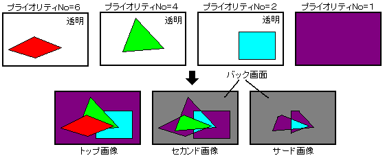

★
HARDWARE Manual★
VDP2ユーザーズマニュアル
★
HARDWARE Manual★
VDP2ユーザーズマニュアル
▲
戻る｜
進む▼
VDP2ユーザーズマニュアル
第11章 プライオリティ機能
- VDP2は、スプライトと各スクロール画面の、プライオリティナンバーの値を比較して、表示優先順位を上から3番目まで決定します。そのとき、スプライトのプライオリティナンバーは最大8個の値からキャラクタごとに選択することができ、各スクロール画面のプライオリティナンバーは特殊プライオリティ機能を使用することで、キャラクタごとやドットごとに値を変えることもできます。
- ラインカラー画面は指定された画面のプライオリティが最も高くなったときに、その画面の一つ下である2番目の位置に挿入することができます。
■11.1 プライオリティ機能
- スプライトと各スクロール画面のプライオリティ(表示優先順位)は、同じTV画面座標に位置するドットが透明でない画面のプライオリティナンバーの値の大きさをドットごとに比較して決定します。画面のプライオリティは、プライオリティナンバーの値の大きい方が高くなり、最もプライオリティが高いドットで構成された画像をトップ画像061サード画像と呼びます。また、スプライトおよび各スクロール画面すべてのドットが透明な位置には、バック画面が表示されます。プライオリティ機能を図11.1に示します。
図11.1 プライオリティ機能

●プライオリティナンバー
- スクロール画面には、3ビットのプライオリティナンバーレジスタが画面ごとに1個ずつあります。このプライオリティナンバーは通常、面全体に使用されますが、特殊プライオリティモードによって最下位ビットの値をキャラクタごとやドットごとに変えることができます。スプライトのプライオリティナン
- バーは、8個ある3ビットのプライオリティナンバーレジスタの1個をキャラクタごとに選択することができます。スプライトのプライオリティナンバーレジスタの選択については、
「9.2 プライオリティとカラー演算」の「プライオリティナンバー選択」を参照してください。
- プライオリティナンバーの値の大きい方が、画面のプライオリティは高くなりますが、等しい場合のプライオリティは表11.1に示す順番に従って決まります。プライオリティナンバーの値が0Hのときは、透明とみなされます。
- 表11.1 プライオリティナンバーが等しい場合のプライオリティ
プライオリティ | 通 常 | 外部画面データを
入力する場合 | 回転スクロール画面
を2面表示する場合 | 回転スクロール画面
2面で外部画面を
入力する場合 |
|---|
高
↑
│
│
│
│
│
│
│
│
↓
低 | スプライト | スプライト | スプライト | スプライト |
|---|
| RBG0 | RBG0 | RBG0 | RBG0 |
| NBG0 | NBG0 | RBG1 | RBG1 |
| NBG1 | EXBG | − | EXBG |
| NBG2 | NBG2 | − | − |
| NBG3 | NBG3 | − | − |
●プライオリティナンバーレジスタ
- プライオリティナンバーレジスタは、プライオリティナンバーを指定します。書き込み専用の16ビットのレジスタで、1800F8H〜1800FCH番地にあります。電源投入後またはリセット後、値は0にクリアされますので必ず設定してください。
- PRINA 1800F8H
- PRINB 1800FAH
- PRIR 1800FCH
15 | 14 | 13 | 12 | 11 | 10 | 09 | 08 |
- |
- |
- |
- |
- |
- |
- |
- |
- プライオリティナンバービット(スクロール画面用)：Priority number bit
- (N0PRIN2〜N0PRIN0, N1PRIN2〜N1PRIN0, N2PRIN2〜N2PRIN0, N3PRIN2〜N3PRIN0, R0PRIN2〜R0PRIN0)
各スクロール画面のプライオリティナンバーを指定します。
| N0PRIN2〜N0PRIN0 | 1800F8H | ビット2〜0 | NBG0用（またはRBG1用） |
| N1PRIN2〜N1PRIN0 | 1800F8H | ビット10〜8 | NBG1用（またはEXBG用） |
| N2PRIN2〜N2PRIN0 | 1800FAH | ビット2〜0 | NBG2用 |
| N3PRIN2〜N3PRIN0 | 1800FAH | ビット10〜8 | NBG3用 |
| R0PRIN2〜R0PRIN0 | 1800FCH | ビット2〜0 | RBG0用 |
- プライオリティナンバーの大きい方が、表示優先順位が高くなります。また、プライオリティナンバーの値が0のときには透明とみなされ表示されません。
スプライトのプライオリティナンバーレジスタについては、「9.2 プライオリティとカラー演算」の「●プライオリティナンバーレジスタ」を参照してください。
▲
戻る｜
進む▼
★
HARDWARE Manual★
VDP2ユーザーズマニュアル
Copyright SEGA ENTERPRISES, LTD., 1997